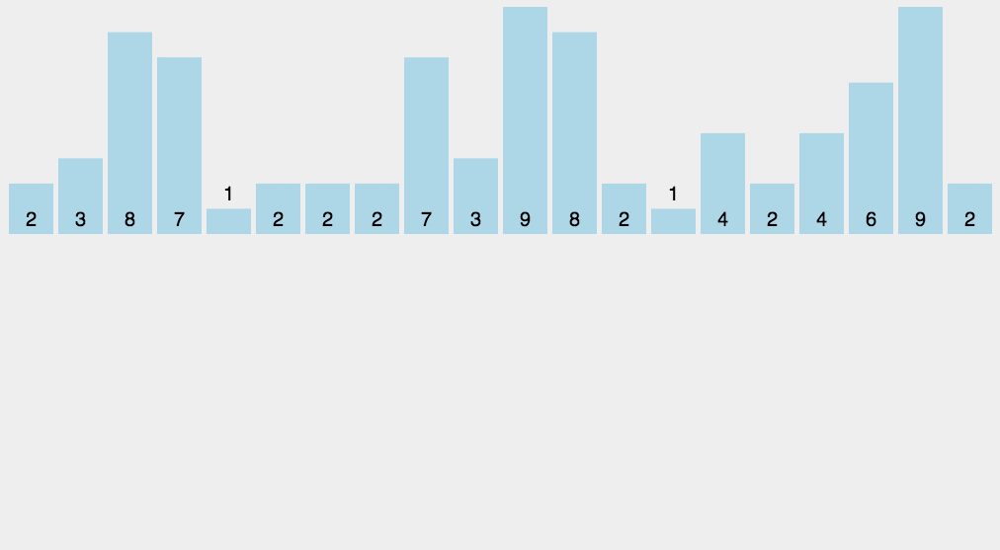

Counting Sort is a non-comparison-based sorting algorithm, suitable for sorting integers or data within a limited range. Its core idea is to count the occurrences of each element, and then place the elements back into their correct positions based on the counting results. The time complexity of counting sort is O(n + k), where n is the number of elements to be sorted and k is the range size of the data.
The core of counting sort is to convert the input data values into keys and store them in an extra allocated array space. As a sorting algorithm with linear time complexity, counting sort requires that the input data must be integers with a definite range.
1. Characteristics of Counting Sort
When the input elements are n integers between 0 and k, its running time is Θ(n + k). Counting sort is not a comparison sort, and its sorting speed is faster than any comparison sorting algorithm.
Since the length of the counting array C used depends on the range of data in the array to be sorted (equal to the difference between the maximum and minimum values of the array to be sorted plus 1), this causes counting sort to require a large amount of time and memory for arrays with a very large data range. For example, counting sort is the best algorithm for sorting numbers between 0 and 100, but it is not suitable for sorting people's names in alphabetical order. However, counting sort can be used in radix sort as the algorithm to sort arrays with a very large data range.
To understand it intuitively, for example, if there are 10 people of different ages, and it is counted that 8 people are younger than A, then A's age ranks 9th. Using this method, the position of every other person can be determined, and thus the sorting is completed. Of course, when ages are duplicated, special handling is needed (to ensure stability), which is why the target array is filled in reverse at the end, and the count of each number is subtracted by 1.
The steps of the algorithm are as follows:
Count frequencies: Traverse the list to be sorted, count the occurrences of each element, and store them in a counting array.
Accumulate frequencies: Accumulate the values in the counting array to obtain the last position of each element in the sorted list.
Build the sorted list: Traverse the list to be sorted, and place elements in the correct positions according to the position information in the counting array.
Output the result: Output the sorted list.
2. Animated Demonstration

Suppose there is a list to be sorted: [4, 2, 2, 8, 3, 3, 1], with data ranging from 1 to 8. The counting sort process is as follows:
Count frequencies：
Initialize the counting array
count, with a size of 9 (range 0-8).Traverse the list and count the occurrences of each element:
count[1] = 1count[2] = 2count[3] = 2count[4] = 1count[8] = 1
Counting array:
[0, 1, 2, 2, 1, 0, 0, 0, 1]。
Accumulate frequencies：
Accumulate the values in the counting array to obtain the final position of each element:
count[1] = 1count[2] = 1 + 2 = 3count[3] = 3 + 2 = 5count[4] = 5 + 1 = 6count[8] = 6 + 1 = 7
Accumulated counting array:
[0, 1, 3, 5, 6, 6, 6, 6, 7]。
Place elements：
Initialize the result array
output, with a size of 7.Traverse the original list and place elements into the result array according to the position information in the counting array:
Element
4：count[4] = 6, place atoutput[5]，count[4] -= 1。Element
2：count[2] = 3, place atoutput[2]，count[2] -= 1。Element
2：count[2] = 2, place atoutput[1]，count[2] -= 1。Element
8：count[8] = 7, place atoutput[6]，count[8] -= 1。Element
3：count[3] = 5, place atoutput[4]，count[3] -= 1。Element
3：count[3] = 4, place atoutput[3]，count[3] -= 1。Element
1：count[1] = 1, place atoutput[0]，count[1] -= 1。
Result array:
[1, 2, 2, 3, 3, 4, 8]。
Output the result：
Sorted list:
[1, 2, 2, 3, 3, 4, 8]。
Example
# Find the maximum value in the list
max_val = max(arr)
# Initialize the counting array
count = [0] * (max_val + 1)
# Count the occurrences of each element
for num in arr:
count[num] += 1
# Accumulate the counting array to obtain the final position of each element
for i in range(1, len(count)):
count[i] += count[i - 1]
# Initialize the result array
output = [0] * len(arr)
# Traverse the original list in reverse and place elements into the result array
for num in reversed(arr):
output[count[num] - 1] = num
count[num] -= 1
return output
# Example
arr = [4, 2, 2, 8, 3, 3, 1]
sorted_arr = counting_sort(arr)
print(sorted_arr) # Output: [1, 2, 2, 3, 3, 4, 8]
Time Complexity
-
Count frequencies: O(n), traversing the list once.
-
Accumulate frequencies: O(k), traversing the counting array once.
-
Place elements: O(n), traversing the list once.
-
Total time complexity: O(n + k), where n is the length of the list and k is the range size of the data.
Space Complexity
-
O(n + k), requiring an additional counting array and result array.
Advantages and Disadvantages
-
Advantages：
-
The time complexity is O(n + k), and when k is small, the performance is excellent.
-
Stable sorting algorithm (the relative order of identical elements will not change).
-
-
Disadvantages：
-
Only applicable to integers or data within a limited range.
-
When the data range k is very large, the space complexity is high.
-
Applicable Scenarios
-
Sorting integers with a small data range.
-
Scenarios requiring a stable sorting algorithm.
-
Suitable for external sorting (such as sorting disk files).
Code Implementation
JavaScript
Example
var bucket = new Array(maxValue+1),
sortedIndex = 0;
arrLen = arr.length,
bucketLen = maxValue + 1;
for (var i = 0; i < arrLen; i++) {
if (!bucket[arr[i]]) {
bucket[arr[i]] = 0;
}
bucket[arr[i]]++;
}
for (var j = 0; j < bucketLen; j++) {
while(bucket[j] > 0) {
arr[sortedIndex++] = j;
bucket[j]--;
}
}
return arr;
}
Python
Example
bucketLen = maxValue+1
bucket = [0]*bucketLen
sortedIndex =0
arrLen = len(arr)
for i in range(arrLen):
if not bucket[arr[i]]:
bucket[arr[i]]=0
bucket[arr[i]]+=1
for j in range(bucketLen):
while bucket[j]>0:
arr[sortedIndex] = j
sortedIndex+=1
bucket[j]-=1
return arr
Go
Example
bucketLen := maxValue + 1
bucket := make([]int, bucketLen) // Array initialized to 0
sortedIndex := 0
length := len(arr)
for i := 0; i < length; i++ {
bucket[arr[i]] += 1
}
for j := 0; j < bucketLen; j++ {
for bucket[j] > 0 {
arr[sortedIndex] = j
sortedIndex += 1
bucket[j] -= 1
}
}
return arr
}
Java
Example
@Override
public int[] sort(int[] sourceArray) throws Exception {
// Make a copy of arr without changing the parameter content
int[] arr = Arrays.copyOf(sourceArray, sourceArray.length);
int maxValue = getMaxValue(arr);
return countingSort(arr, maxValue);
}
private int[] countingSort(int[] arr, int maxValue) {
int bucketLen = maxValue + 1;
int[] bucket = new int[bucketLen];
for (int value : arr) {
bucket[value]++;
}
int sortedIndex = 0;
for (int j = 0; j < bucketLen; j++) {
while (bucket[j] > 0) {
arr[sortedIndex++] = j;
bucket[j]--;
}
}
return arr;
}
private int getMaxValue(int[] arr) {
int maxValue = arr[0];
for (int value : arr) {
if (maxValue < value) {
maxValue = value;
}
}
return maxValue;
}
}
PHP
Example
{
if ($maxValue === null) {
$maxValue = max($arr);
}
for ($m = 0; $m < $maxValue + 1; $m++) {
$bucket[] = null;
}
$arrLen = count($arr);
for ($i = 0; $i < $arrLen; $i++) {
if (!array_key_exists($arr[$i], $bucket)) {
$bucket[$arr[$i]] = 0;
}
$bucket[$arr[$i]]++;
}
$sortedIndex = 0;
foreach ($bucket as $key => $len) {
if($len !== null){
for($j = 0; $j < $len; $j++){
$arr[$sortedIndex++] = $key;
}
}
}
return $arr;
}
C
Example
#include <stdlib.h>
#include <time.h>
void print_arr(int *arr, int n) {
int i;
printf("%d", arr[0]);
for (i = 1; i < n; i++)
printf(" %d", arr[i]);
printf("\n");
}
void counting_sort(int *ini_arr, int *sorted_arr, int n) {
int *count_arr = (int *) malloc(sizeof(int) * 100);
int i, j, k;
for (k = 0; k < 100; k++)
count_arr[k] = 0;
for (i = 0; i < n; i++)
count_arr[ini_arr[i]]++;
for (k = 1; k < 100; k++)
count_arr[k] += count_arr[k - 1];
for (j = n; j > 0; j--)
sorted_arr[--count_arr[ini_arr[j - 1]]] = ini_arr[j - 1];
free(count_arr);
}
int main(int argc, char **argv) {
int n = 10;
int i;
int *arr = (int *) malloc(sizeof(int) * n);
int *sorted_arr = (int *) malloc(sizeof(int) * n);
srand(time(0));
for (i = 0; i < n; i++)
arr[i] = rand() % 100;
printf("ini_array: ");
print_arr(arr, n);
counting_sort(arr, sorted_arr, n);
printf("sorted_array: ");
print_arr(sorted_arr, n);
free(arr);
free(sorted_arr);
return 0;
}
Reference address:
https://github.com/hustcc/JS-Sorting-Algorithm/blob/master/8.countingSort.md
https://zh.wikipedia.org/wiki/%E8%AE%A1%E6%95%B0%E6%8E%92%E5%BA%8F
Bird
132***7308@qq.com
Sharing the C# version:
// 使用计数排序对输入数组进行排序 public static void CountSort(int[] arr) { // 查找数组中的最大值和最小值 int max = arr[0]; int min = arr[0]; // 遍历数组以找到最大和最小值 for(int i = 0; i < arr.Length; i++) { // 更新最大值 if (arr[i] > max) { max = arr[i]; } // 更新最小值 if (arr[i] < min) { min = arr[i]; } } // 创建计数数组，长度为最大值和最小值之差加1 int[] count = new int[max - min + 1]; // 遍历数组并在计数数组中对应位置增加计数 for(int i = 0; i < arr.Length; i++) { count[arr[i] - min]++; } // 重新排列原始数组 int index = 0; for(int i = 0; i < count.Length; i++) { // 根据计数数组中的计数，将元素回写到原始数组中 while (count[i]-- > 0) { arr[index++] = i + min; } } }Bird
132***7308@qq.com